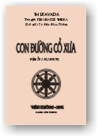

|
BuddhaSasana Home Page |
Vietnamese, with Unicode Times font |
|  |
Con Ðường
Cổ Xưa Piyadassi Thera Dịch giả: Tỳ Khưu Pháp Thông |
|
Mục Lục |
|
|
LỜI GIỚI THIỆU |
|
|
Quan điểm Của đạo Phật |
|
|
Chân lý trung tâm
của đạo Phật - TỨ THÁNH ÐẾ |
|
|
THÁNH ÐẾ THỨ HAI - SAMUDAYA: NHÂN SANH KHỔ. |
|
|
THÁNH ÐẾ THỨ BA - NIRODHA: SỰ DIỆT KHỔ |
|
|
BA NHÓM CỦA BÁT THÁNH ÐẠO |
|
|
THÁNH ÐẾ THỨ TƯ -
MAGGA: ÐẠO ÐẾ |
|
|
CHÁNH TƯ DUY (SAMMÀ-SAMKAPPA) |
|
|
CHÁNH NGỮ (SAMMÀ-VÀCÀ) |
|
|
CHÁNH NGHIỆP (SAMMÀ-KAMMANTA) |
|
|
CHÁNH MẠNG (SAMMÀ-ÀJÌVA) |
|
|
CHÁNH TINH TẤN (SAMMÀ- VÀYÀMA) |
|
|
CHÁNH NIỆM (SAMMÀ-SÀTI) |
|
|
CHÁNH ÐỊNH (SAMMÀ-SAMÀDHI) |
|
|
KẾT LUẬN |
|
-ooOoo-
LỜI GIỚI THIỆU
P
hật học ngày này bao hàm cả một rừng kinh sách của nhiều Tông môn, Bộ phái. Riêng Tam Tạng Thánh Ðiển Pàli nguyên thủy thì chúng ta nghiên cứu một đời cũng không dễ gì thấu suốt, huống chi về sau còn có cả Kinh Luận dị biệt của các bộ phái Tiểu thừa, rồi đến sự phát triển đa dạng của tư tưởng Ðại thừa, Mật tông, Thiền tông v.v... thì dù một người có sống hơn trăm năm cũng không sao khám phá hết những tinh hoa trong rừng Kinh Ðiển thâm áo này.Tuy nhiên Ðức Phật dạy:
"Dầu cho ngôn ngữ trăm ngàn
Nói điều vô ích chỉ bàn suông thôi
Tốt hơn: ít chữ, ít lời
Nghe xong tịnh lạc sống đời vô ưu".
(Kinh Lời Vàng – Minh Ðức dịch)Cho nên người hữu duyên đôi khi chỉ nghe một câu kệ, một lời kinh, một yếu ngữ hoặc thậm chí chỉ thấy một sự kiện vô ngôn mà vẫn thâm nhập được chánh pháp.
Người học Phật cốt thấy ra chỗ uyên nguyên, tinh yếu và giản dị nhất của Ðạo chứ không nên tầm chương trích cú quá nhiều Kinh luận để rồi không tránh khỏi chướng ngại của sở tri, hay lắm khi bay bỗng trong thế giới huyễn hoặc của tư tưởng, để rồi đánh mất thực địa của pháp tánh như thị (Yathàbhùtà) mà Ðức Phật muốn chỉ bày.
"Con Ðường Cổ Xưa" đã cố gắng giúp người học Phật tập chú vào những điểm giáo lý cốt lõi nhất đã được tất cả các Tông phái công nhận như là điểm chung đồng và thuần túy nhất của đạo Phật. Thông suốt được những điểm giáo lý này có thể được xem như đã thâm nhập toàn bộ con đường giác ngộ giải thoát của Ðức Phật.
Dĩ nhiên những gì được trình bày trong tập sách này chỉ là phần giới thiệu cơ bản của tác giả, còn phần khám phá thực chứng chính là hứng thú dành cho sự ngạc nhiên của những ai muốn tìm chân lý.
Tổ Ðình Bửu Long, mùa an cư 2545.
Tỳ Khưu Viên Minh.-ooOoo-
LỜI TỰA
H
ơn hai ngàn hai trăm năm trước, nơi vườn Lộc Uyển tại Sarnath Ấn Ðộ, đã vang lên bức Thông Ðiệp Giải Thoát của Ðức Phật, một sự kiện trọng đại, đã làm thay đổi hẳn cách tư duy và lối sống của loài người. Mặc dù mới đầu chỉ có 5 vị đạo sĩ thuộc nhóm Kiều Trần Như được nghe Thánh pháp này, giờ đây đã lan tỏa thật bình an đến tận những vùng xa xôi nhất của cõi thế gian, và nhu cầu để hiểu được rõ ràng hơn, chính xác hơn ý nghĩa của Thánh pháp đã và đang là một nhu cầu lớn cho thế giới.Trong những năm gần đây, nhiều sách dẫn giải về lời dạy của Ðức Phật đã xuất hiện, song phần lớn những cuốn sách ấy đều thiếu tính chính xác và không tương ứng với tinh thần Phật ngôn. Với tất cả lòng khiêm tốn, bần Tăng nguyện sẽ trình bày thật chân xác về lời Ðức Phật dạy như đã được tìm thấy trong Tam Tạng Pàli nguyên thủy nhất, một truyền thống Phật giáo cổ kính và rất đáng tin cậy từ ngàn xưa cho tới nay. Do đó, nội dung của cuốn sách này là nhằm giải thích bao quát quan niệm trung tâm của đạo Phật, tức Tứ Thánh Ðế, đặc biệt nhấn mạnh đến Bát Thánh Ðạo, Pháp hành dẫn đến Giác Ngộ Giải Thoát. Bần Tăng đặt tên cho cuốn sách là "Con Ðường Cổ Xưa" (Puràna Maggam), đúng theo những từ mà Ðức Phật đã dùng khi giới thiệu về Bát Thánh Ðạo.
Piyadassi Thera
Vajiràràma
Colomb 5, Sri. Lanka (Ceylon).-ooOoo-
LỜI NGƯỜI DỊCH
C
on Ðường Cổ Xưa (The Buddha's Ancient Path) do Ngài Piyadassi, một vị pháp sư uyên bác của Giáo Hội Tăng Già Nguyên Thủy Tích Lan, biên khảo dựa trên tinh thần Kinh Ðiển Nguyên Thủy.Tác phẩm này nhằm đã thông mọi kiến giải sai lầm về những lời dạy của Ðức Phật. Con Ðường Cổ Xưa là tác phẩm giới thiệu về Bát Thánh Ðạo, là lộ trình giải thoát của những bậc Giác Ngộ uyên vỹ xưa cũng như nay.
Tác phẩm này được Ngài Piyadassi làm cho sáng tỏ thêm Tôn chỉ của Ðấng từ phụ. Những vấn đề Ngài nêu ra đều được dẫn chứng bằng một đoạn kinh hay một sự thật sinh động trong đời thường mà chúng ta sẽ cảm nhận một sự sâu sắc đầy thú vị.
Ở đây độc giả sẽ tìm hiểu những lời giáo huấn nguyên thủy nhất của Ðức Phật và định hướng cho mình một con đường giác ngộ chân chánh.
Trong quá trình chuyển ngữ, những đoạn trích dẫn Kinh Ðiển phần lớn chúng tôi dựa vào Tạng Kinh do Hòa Thượng Minh Châu dịch, với ít nhiều thêm bớt cho phù hợp với nguyên bản. Ngoài ra, ở những phần chú thích cuối trang chúng tôi còn rút thêm từ Tạng Kinh của hội Tam Tạng Miến (Myanmar Pitaka Association) để bổ sung vào cho rõ nghĩa.
Thực ra, dầu đã hết sức cố gắng nhưng cũng không sao tránh khỏi những sai sót. Kính mong chư Bậc Tôn Ðức, các bậc thức giả niệm tình hoan hỷ bổ khuyết và góp ý cho chúng tôi, để những lần tái bản sau được hoàn chỉnh hơn.
Chúng tôi thành kính tri ân:
Ngài Piyadassi và tác phẩm của Ngài.
Thầy Viên Minh đã tổng duyệt và viết lời giới thiệu.
Sư Pháp Minh (rừng thiền Viên Không) đọc bản thảo và sửa lỗi chánh tả.
Phật tử Thiện Trí (chùa Bửu Long) đã tận tình đánh máy và trình bày bản in cùng với sự giúp đỡ của Hương Ðịnh.
GÐ anh Hoàng Quang Chung đã phụ giúp chúng tôi trong kỹ thuật vi tính.Và những đạo hữu đã đóng góp tịnh tài như:
Cô Ðặng Thị Năm, tu nữ chùa Bửu Long.
Chị em cô Nguyễn Thị Thùy, Nguyễn Thị Tùy.
Cô Tịnh Phạm.
Cô giáo Mai.
Cô Liễu Vân.
Cô Diệu Minh.Và một số Phật tử đã giúp chúng tôi hoàn thành dịch phẩm này.
Ở nơi đây chư vị xin ghi nhận lòng tri ân sâu sắc của chúng tôi. Nguyện cầu hồng ân Tam Bảo hộ trì cho Chư vị thân tâm thường được an lạc.
Do năng lực phước thí này là nhân duyên nguyện cho chúng con đầy đủ Minh – Hạnh – Túc giác ngộ chân lý trong ngày vị lai.
Idam vata me punnam àsavakkhayàvaham hotu anàgate.
Viên Không, Trung Thu năm Tân Tỵ (PL 2545 , TL 2001)
Dịch giả: Tỳ Khưu Pháp Thông.
--ooOoo--
Ðầu trang | Mục lục | 01 | 02 | 03 | 04 | 05 | 06 | 07 | 08 | 09 | 10 | 11 | 12 | 13 | 14
Chân thành cám ơn Tỳ kheo Viên Minh đã gửi tặng bản vi tính (Bình Anson, 03-2002)
[Trở
về trang Thư Mục]
updated: 20-03-2002